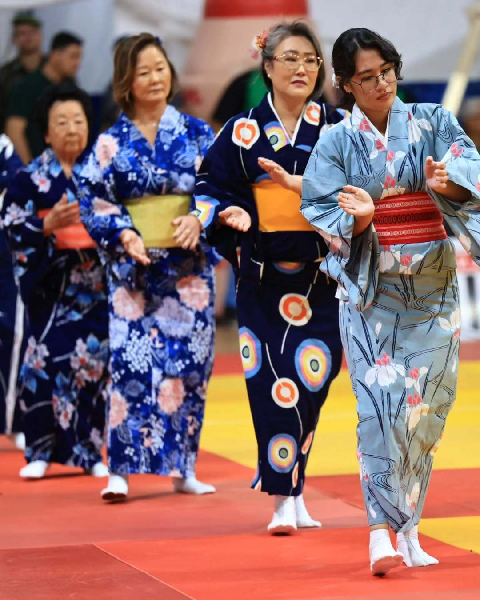
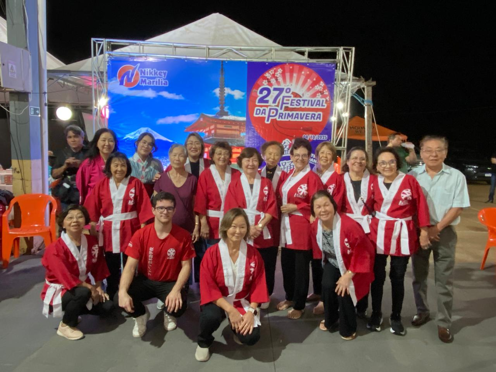

Bon Odori (盆踊り)
Bon Odori: A Dança que Une Gerações
Imagine o som vibrante dos tambores, a luz suave das lanternas e uma grande roda de pessoas dançando em harmonia. Isso é o Bon Odori. Mais do que um espetáculo, é uma dança folclórica japonesa cheia de alegria, feita para todos. E a melhor parte: você não precisa ser um dançarino para participar. Os passos são simples, o ritmo é contagiante e o espírito é de comunidade.
O que você aprende em nossas aulas?
Em nosso departamento, ensinamos o Bon Odori como uma forma de expressão cultural e de bem-estar. Nossas aulas são um convite para:
- Aprender os Passos: Conheça as coreografias tradicionais, que contam histórias de pescadores, mineiros e do cotidiano do Japão antigo.
- Conectar-se com a Cultura: Entenda o significado por trás da dança como uma forma de gratidão e celebração da vida e da memória.
- Fazer um Exercício Divertido: É uma atividade física leve e alegre, ótima para o corpo e para a mente.
- Fazer Parte da Comunidade: Dance conosco, faça novas amizades e prepare-se para ser uma das estrelas do nosso grande festival anual!
Turmas para Iniciantes
Nossas aulas são abertas para todas as idades e não exigem nenhuma experiência prévia. Venha com uma roupa confortável e vontade de se divertir!
- Turma Aberta: Segunda Feira, 07:30 - 08:30
Participações em Matsuris (祭り)
Nosso grupo de Bon Odori participa ativamente de diversos Matsuris — os tradicionais festivais japoneses — em várias cidades da região. Juntos, representamos a ACERT com alegria e orgulho, levando a dança e a cultura japonesa a novos públicos.
Participar desses eventos é uma experiência única: viajamos em grupo, vestimos nossos yukatas e dançamos sob lanternas e fogos de artifício, junto a outras associações e escolas japonesas. É uma oportunidade de celebrar, fazer amizades e fortalecer o vínculo com nossas raízes culturais.
Venha conosco e viva a energia dos Matsuris!
Junte-se à Nossa Roda de Dança!
Dê o primeiro passo para se conectar com a cultura japonesa de uma forma vibrante e divertida. Sua participação fará nosso próximo festival ainda mais especial.
Inscreva-se ou Peça Informações